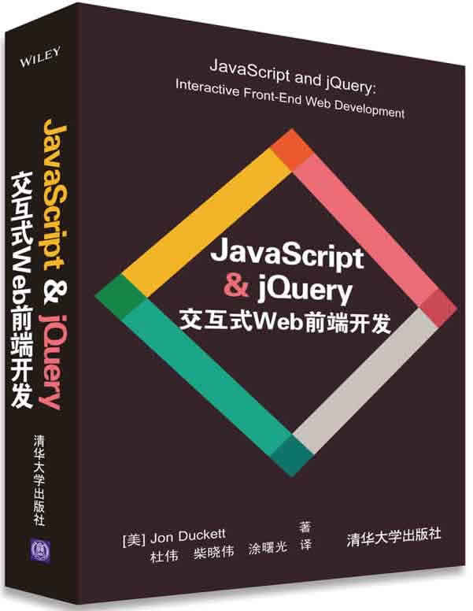

首页 > 书籍下载
《JavaScript & jQuery 交互式Web前端开发》PDF下载（高清完整版）
|  | 作者：[美]Jon Duckett |
| 译：杜伟、柴晓伟、涂曙光 | |
| 出版时间：2015年05月01日 | |
| 出版社： 清华大学出版社 | |
| ISBN：9787302397632 | |
| 总页数：612 |
这是一本 Web 前端交互式开发书籍，书中主要介绍如何高效地学习 JavaScript 和 JQuery，如果你是一名新手，或者有一些添加脚本的基础，想要用更好的方式来实现它们，那么这本书将是您非常棒的选择。
这里提供的是《JavaScript & jQuery 交互式Web前端开发》的高清 PDF 下载，内容完整，附带目录标签。
和其它 Web 前端开发书籍相比，这本书主要教会我们如何让网站更具有交互性、吸引性和可用性，相信读完这本书，我们的思维能力和编写代码能力都将大大提升！
这本书出版以来，被评为“五星畅销书”，受到了很多读者的好评，比如：
- 真的是阅读前面两章，就能很好地掌握基础知识。阅读起来很轻松，解释也非常清楚，堪称良师益友。
- 内容详实，比较实用，正好项目能用上！
- 不愧是五星级畅销书，内容由浅入深，通俗易懂，作者也是非常有经验的网站开发工作者，推荐！
书籍目录
- 第1章 编程基础知识
- 第2章 JavaScript基础指令
- 第3章 函数、方法与对象
- 第4章 判断和循环
- 第5章 文档对象模型
- 第6章 事件
- 第7章 jQuery
- 第8章 Ajax与JSON
- 第9章 API
- 第10章 错误处理与调试
- 第11章 内容面板
- 第12章 筛选、搜索与排序
- 第13章 表单增强与验证
书籍下载
一键登录，免费下载完整版 PDF，文件名称：《JavaScript & jQuery 交互式Web前端开发》.pdf